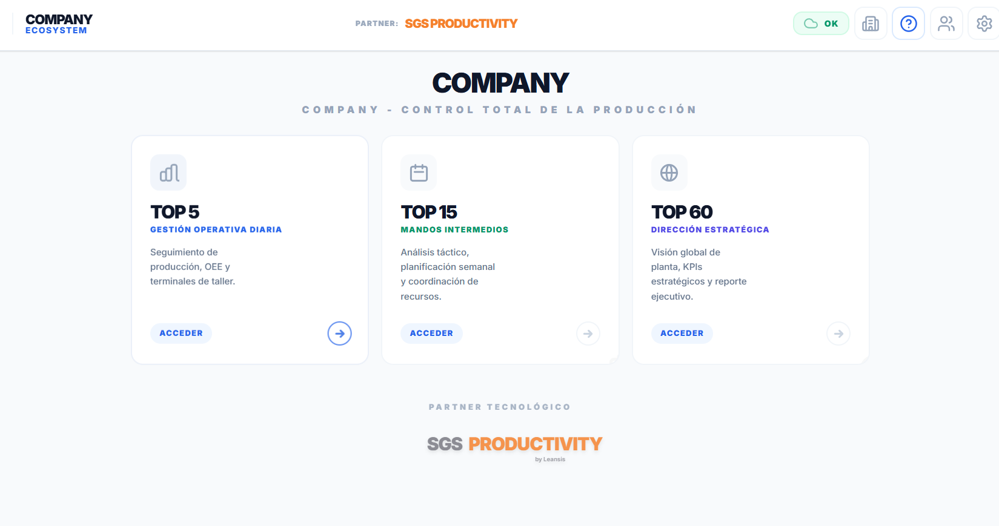
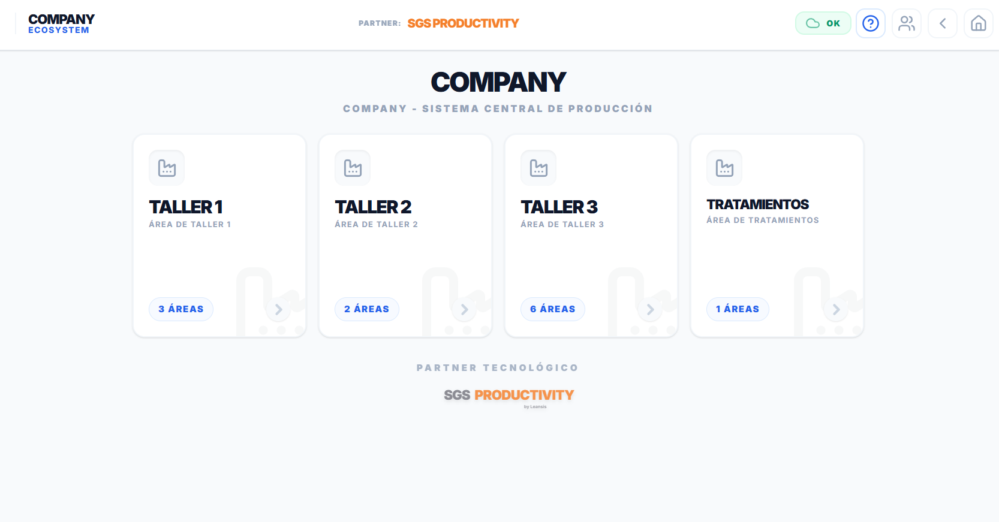
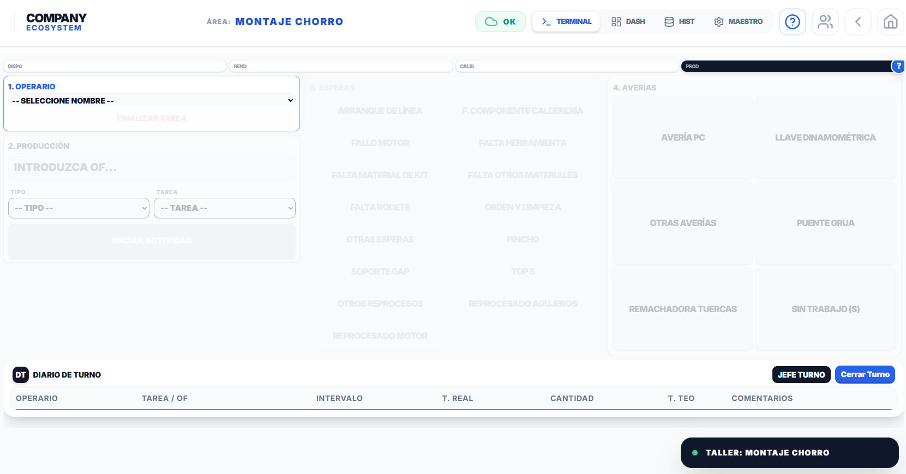
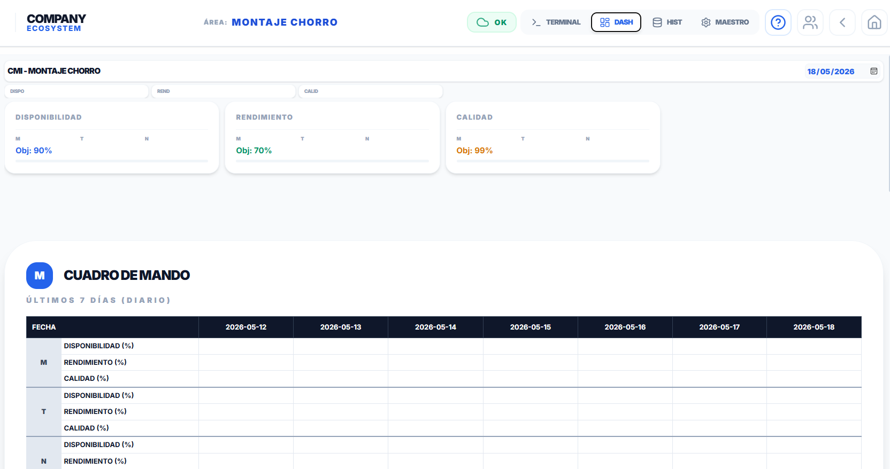
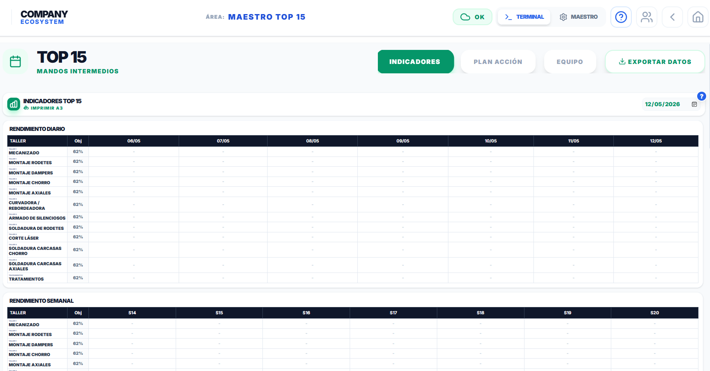
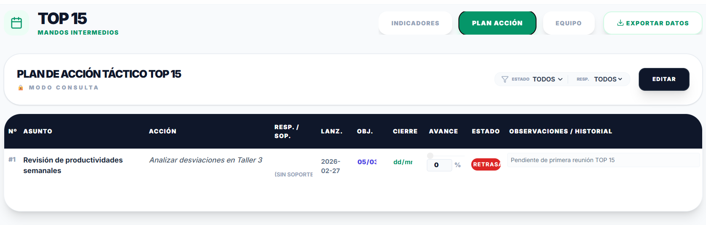
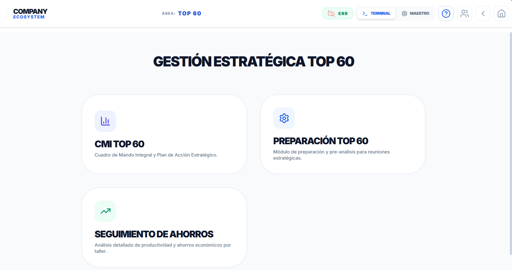
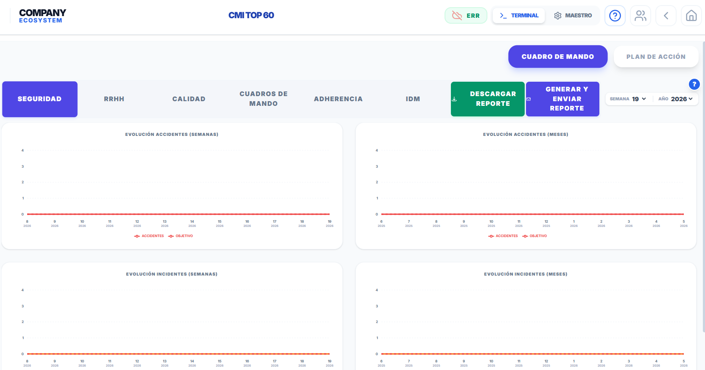
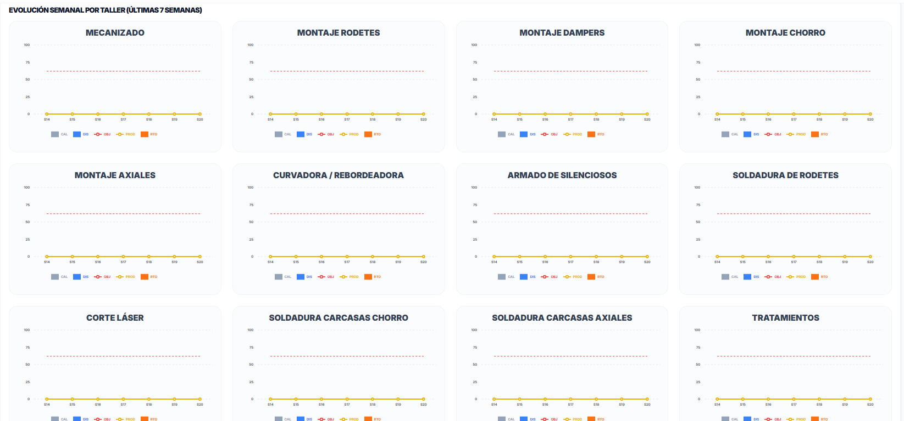

Jumosol
Ecosistema digital para el control total de la producción industrial: desde la operativa diaria de taller hasta la dirección estratégica de planta.
Explorar la Interfaz
Funcionalidades Clave

Tres niveles de gestión integrados
La pantalla de inicio da acceso a los tres módulos del ecosistema, cada uno orientado a un perfil distinto dentro de la organización industrial.
- TOP 5 — Gestión operativa diaria: seguimiento de producción, OEE y terminales de taller
- TOP 15 — Mandos intermedios: análisis táctico, planificación semanal y coordinación de recursos
- TOP 60 — Dirección estratégica: visión global de planta, KPIs estratégicos y reporte ejecutivo

Gestión central de talleres
Vista global del sistema de producción que permite organizar y acceder a los distintos talleres y áreas de la planta de forma estructurada.
- Acceso centralizado a todos los talleres (Taller 1, 2, 3, Tratamientos…)
- Visualización del número de áreas productivas por taller
- Navegación directa a cualquier área desde una única pantalla
- Organización clara por zonas de la planta

Terminal de operación en planta
Interfaz operativa que permite a los operarios gestionar tareas, registrar producción y controlar incidencias en tiempo real dentro del área de trabajo.
- Selección de operario y asignación de tarea u orden de fabricación
- Registro de tipo de tarea y producción real
- Gestión de esperas (arranque de línea, falta de material, reprocesos…)
- Registro de averías con categorías predefinidas por área
- Diario de turno con seguimiento completo por operario

Dashboard OEE por área
Cuadro de mando del área que muestra en tiempo real los tres indicadores OEE —disponibilidad, rendimiento y calidad— con sus objetivos y evolución diaria por turno.
- Visualización de disponibilidad, rendimiento y calidad con objetivo configurado
- Desglose por turnos: mañana, tarde y noche
- Tabla histórica de los últimos 7 días con datos por turno
- Acceso rápido entre vistas: Terminal, Dashboard, Histórico y Maestro

Indicadores de rendimiento para mandos intermedios
Panel de seguimiento táctico que consolida el rendimiento diario y semanal de todos los talleres de la planta, con objetivos definidos por área.
- Rendimiento diario y semanal de todos los talleres en una sola pantalla
- Objetivo individual por taller con comparativa real vs. objetivo
- Vista configurable: Indicadores, Plan de Acción y Equipo
- Exportación de datos e impresión en formato A3

Plan de acción táctico
Herramienta de seguimiento de acciones tácticas que centraliza los compromisos del equipo intermedio con estado, responsable, fechas y porcentaje de avance.
- Registro de acciones con asunto, descripción y responsable
- Seguimiento de fechas de lanzamiento, objetivo y cierre real
- Control de avance (%) y estado: en plazo, retrasado, cerrado
- Historial de observaciones por acción
- Filtros por estado y responsable

Gestión estratégica TOP 60
Módulo de dirección que agrupa las herramientas de análisis y reporte estratégico de la planta en tres grandes áreas de gestión.
- CMI TOP 60 — Cuadro de Mando Integral y Plan de Acción Estratégico
- Preparación TOP 60 — Módulo de pre-análisis para reuniones estratégicas
- Seguimiento de Ahorros — Análisis detallado de productividad y ahorros por taller

Cuadro de Mando Integral TOP 60
Dashboard estratégico que integra todos los KPIs clave de la planta —seguridad, RRHH, calidad, adherencia e IDM— con evolución semanal y mensual, y generación automática de reportes ejecutivos.
- KPIs por dimensión: Seguridad, RRHH, Calidad, Cuadros de Mando, Adherencia e IDM
- Gráficas de evolución de accidentes e incidentes por semanas y meses
- Selección de semana y año para análisis histórico
- Descarga de reporte en PDF y envío automático por correo
- Plan de Acción estratégico integrado

Evolución semanal por taller
Vista comparativa que muestra la evolución de los últimos 7 semanas para todos los talleres de la planta en un único panel, facilitando la detección de tendencias y desviaciones.
- Panel multi-taller con gráficas individuales por área productiva
- Métricas: Calidad (CAL), Disponibilidad (DIS), Objetivo (OBJ), Producción (PROD) y Rendimiento (RTD)
- Serie histórica de las últimas 7 semanas por taller
- Cobertura completa: Mecanizado, Montaje, Soldadura, Corte Láser, Tratamientos y más